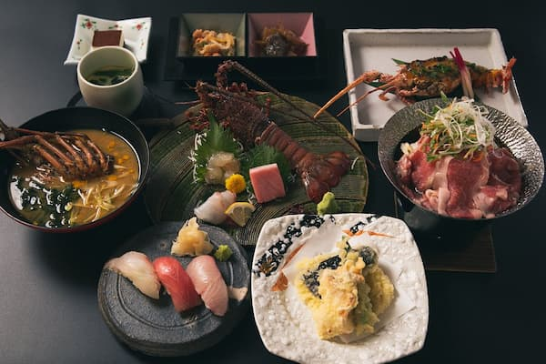
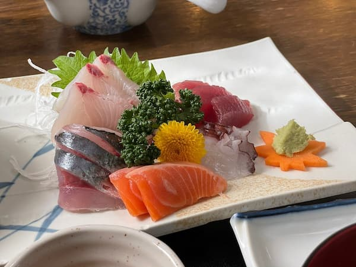
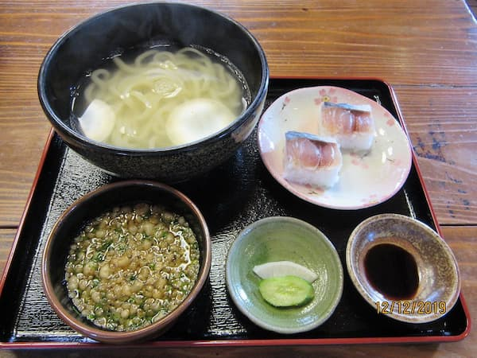

Aoshima Kaisen Ryori Uomasu
Enjoy a wide variety of fresh fish caught locally in Aoshima
Hidemaru
Enjoy seafood, bought fresh from the local market daily while overlooking the Devil's Sentakuita, a strange and famous rock formation.
Kamaage Udon Iwami
If you want to switch it up from all the delicious seafood you can find on the island, this udon restaurant is famous for its kamaage udon.